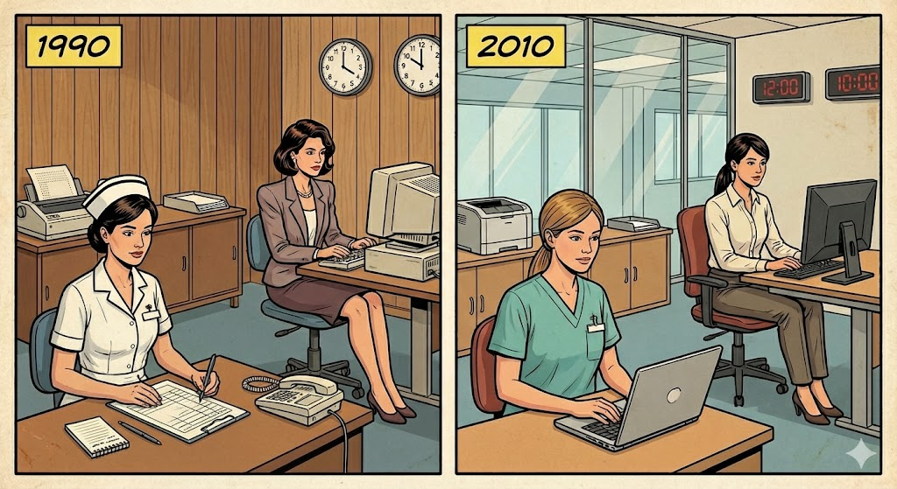
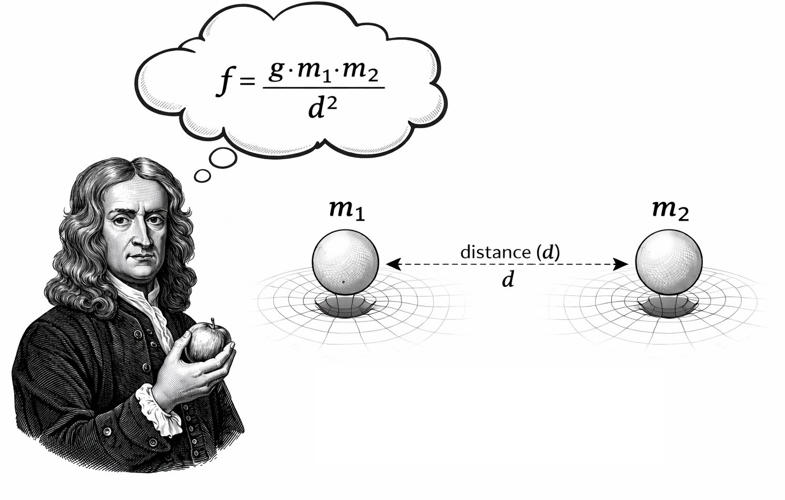
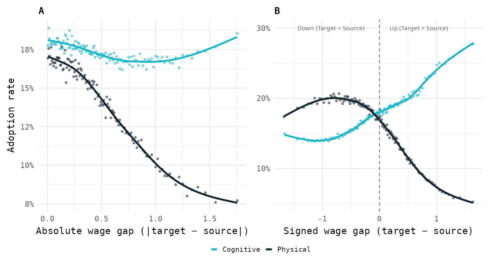
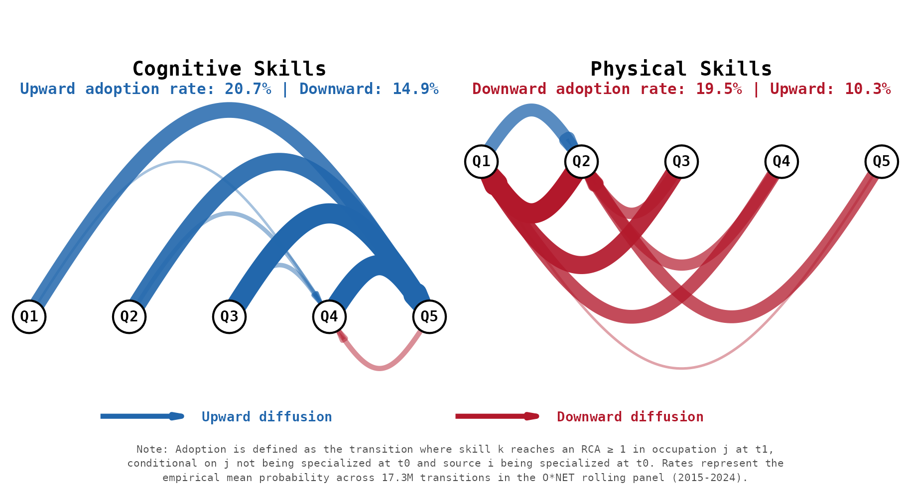
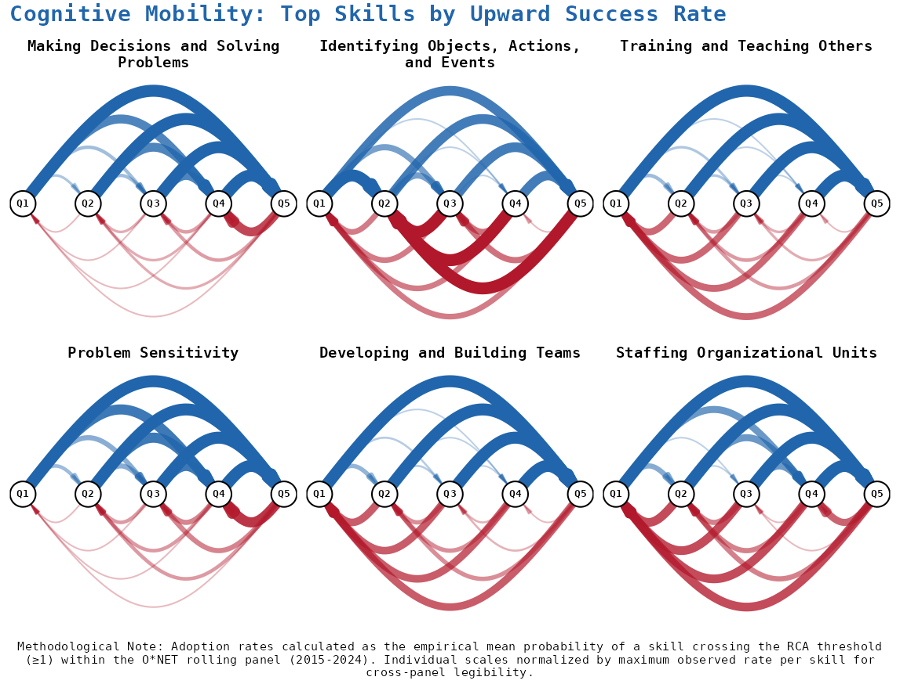
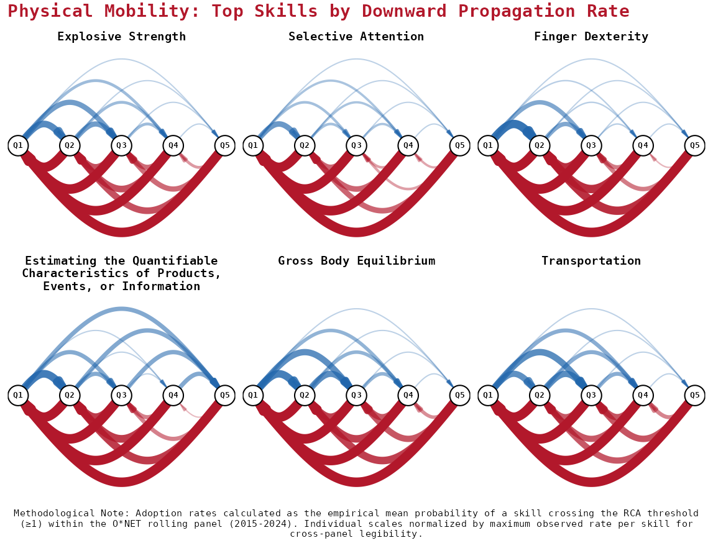
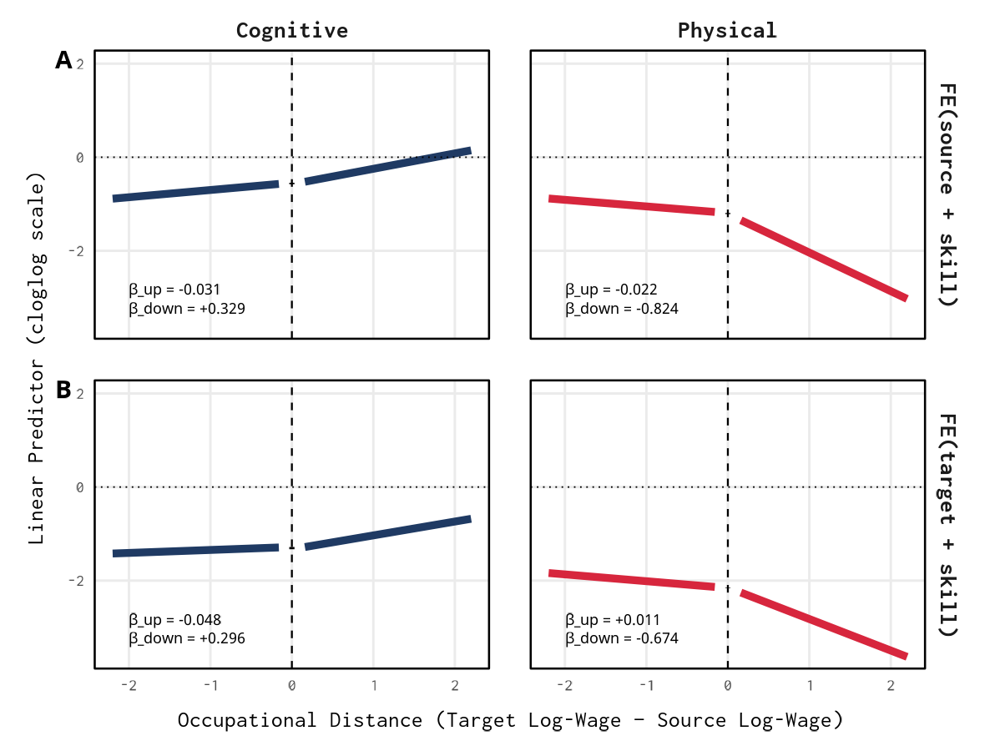
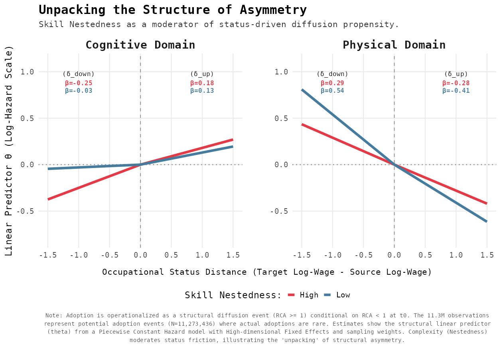
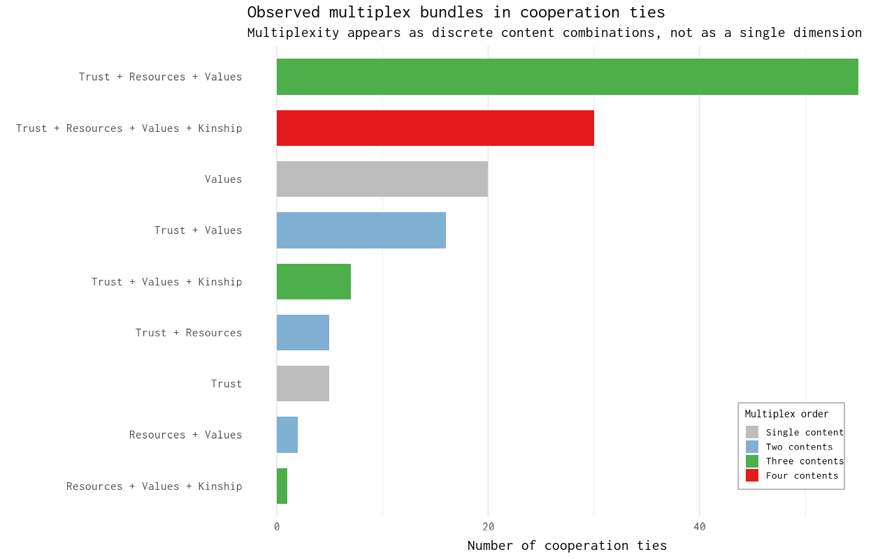
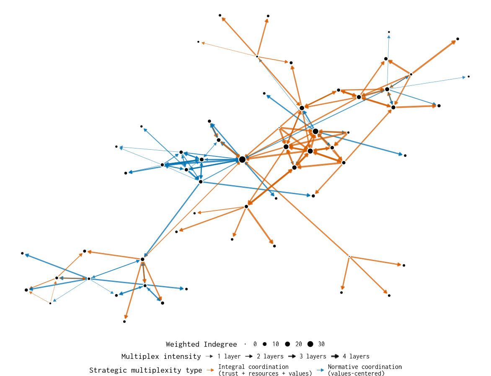

| Occupation | 1990 | 2010 |
|---|---|---|
| Secretary | ✓ | ✓ |
| Nurse | ✗ | ✓ |

Structurally Conditioned Diffusion
How Social and Occupational Structures Filter Change
Roberto Cantillan
Department of Sociology | Pontificia Universidad Católica de Chile
The Research Program
Unifying Logic Diffusion is not a neutral process. Whether we look at skills in a labor market or protest in a city, structure acts as a selective filter.
- Mechanism: Diffusion potential is shaped by “structural gravity” and relational multiplexity.
- Outcome: These filters do not just slow down change; they reproduce inequality by channeling flows into specific orbits.
- Dual Focus:
- Occupational Space: Asymmetric flow of skills (Paper 1).
- Organizational Space: Strategic multiplexity in high-risk protest (Paper 2).
PAPER 1: Structurally Conditioned Diffusion of Skills
The Puzzle: Static vs. Dynamic
- What we know: Skill systems are polarized (Cognitive vs. Physical) and hierarchically nested.
- The Gap: Most accounts are architectural (where skills are), but we don’t know how requirements propagate.
- The Question: How do skill requirements travel between occupations and why does this reproduce hierarchies?

I. A GRAVITY MODEL FOR SKILL DIFFUSION
Standard gravity

Gravity Logic for Skill Diffusion
Adapting standard gravity models traditionaly used in economics, we understand the probability \(P_{ijk}\) that skill \(k\) diffuses from occupation \(i\) (source) to \(j\) (target) is given by:
\[P_{ijk} \;\propto\; \frac{M_i \cdot M_j \cdot \color{red}{S_k}}{\color{blue}{D_{ij}^{\gamma}}} \]
- \(M_i: \text{Emissive capacity of the source occupation y $M_j$ absortuve capacity of the target occupation}\)
- \(\color{red}{S_k: \text{Skills differ in how easily they travel across occupations)}}\)
- \(\color{blue}{D_{ij}: \text{Distance between occupations (eg. wage gap, task relatedness)}}\)
Our theory focuses on the the interaction between skill attributes and role of distance between occupations (above and beyond the role of mass)
Our theory: Asimmetric trayectory channeling
- Distance \((D)\) determines who is within reach; occupational status \((S)\) determines which skills are allowed in. Jobs that are close to each other can easily exchange requirements, but higher-status jobs selectively filter what they accept.
ATC is what happens when closeness meets inequality.
Cognitive skills move upward because high-status jobs value and can afford them—especially when they build on prior skills.
Physical skills are often blocked even between similar jobs, so they mostly flow sideways or downward, especially when they do not rely on prior capabilities.
Aggregate polarization dynamic: complex, cognitive skills climb the job ladder, while simple, physical skills get trapped in lateral or downward paths.
III. FINDINGS
Raw Patterns

Polarized Diffusion: Flow Networks

The Asymmetry: Directional Friction by Domain
Asymmetry means skills face different “friction” when diffusing up vs. down the wage ladder. The direction of this friction reverses between cognitive and physical skills.
| Cognitive | Physical | Interpretation | |
|---|---|---|---|
| Upward rate | 20.2% | 11.1% | Cognitive climbs easily |
| Downward rate | 15.6% | 19.0% | Physical falls easily |
| Gap (Up − Down) | +4. 7 p.p. | −8.0 p. p. | Opposite signs |
| Implication | Facilitates ascent | Blocks ascent | Polarizing force |
Physical skills face 1.7× more friction going up than going down


III. REGRESSION RESULTS


Key Magnitudes
Coefficients (wage gap, cloglog scale):
| Term | Cognitive | Physical | Interaction |
|---|---|---|---|
| Upward | +0.08. | −0.34 | −0.42*** |
| Downward | +0.13 (ns) | +0.65 | +0.52** |
| Distance | −1.90*** | −3.23 | −1.33* |
Interpretation:
- Upward gap slightly boosts cognitive adoption, penalizes physical
- Downward gap has no effect on cognitive, strongly boosts physical
- Distance decay is 70% steeper for physical skills
Robustness Summary
| Test | Specification | Result |
|---|---|---|
| Thresholds | RCA 0.9, 1.0, 1.1 | Pattern unchanged |
| Distances | Shortest path, resistance, cosine | Same relative slopes |
| Periods | 2015-18, 2019-21, 2022-24 | ATC persists |
| Bootstrap | Node-level B=1000 vs clustered SE | Ratio around 1.0 |
| Representation | Skill-skill vs occ-occ network | Ordinal match |
The asymmetry is not an artifact of thresholds, distance measures, or time periods.
IV. IMPLICATIONS
What This Tells Us
The asymmetry is structural, not incidental:
- Physical skills don’t just happen to stay low — they face systematic friction
- Cognitive skills don’t just happen to climb — the path is smoother
- Nestedness amplifies these differences
This reframes polarization:
Not just what skills exist where, but how skill requirements flow — and why certain flows are blocked
Open questions:
- Does reducing occupational distance (via training, credentialing) actually change diffusion?
- Which specific skills are “near the boundary” and most amenable to intervention?
- How do firm-level decisions interact with these macro patterns?
PAPER 2: Strategic Multiplexity in Urban Protest
The Puzzle: Coordination under Risk
- Participation entails credible costs (repression, sanction, retaliation).
- Attitudinal sympathy is insufficient.
- Organizations must solve simultaneously:
- Legitimacy: Is coordination shareable?
- Capacity: Is coordination feasible?
Claim: Scaling protest under risk depends on Strategic Multiplexity.

Strategic Multiplexity (Core Idea)
Multiplexity is not “more layers.”
It is the specific composition of relational contents embedded in cooperation.
- Layers are asymmetric.
- Contents matter only when embedded in coordination.
- Reinforcement is qualitative, not additive.
Theoretical Core: Conditional Multiplexity
- Backbone: Cooperation network.
- Overlays: Trust, resources, values, kinship.
- These are edge attributes, not parallel layers.
\[ Y_{ij} = \big(y_{ij}^{(1)}, y_{ij}^{(2)}, \dots, y_{ij}^{(K)}\big) \]

Contribution to Diffusion Theory
- Not all exposures are equivalent.
- Reinforcement depends on which contents overlap.
- Wide bridges are wide because they carry heterogeneous guarantees.
Contribution: an operational specification of complex contagion infrastructure.
Identification Strategy
Design: Egocentric, snowball-based multiplex data.
- Cooperation elicited via name generators.
- Multiplex contents observed conditional on cooperation.
- Separation:
- Structural formation
- Strategic composition
Methods Overview
- Backbone inference under egocentric observation.
- Multiplexity modeled as conditional edge attributes (LCA and MGLMM).
- Structural formation and diffusion dynamics kept distinct.
- Simulations
- Not predictive.
- Logical test of whether observed structure can sustain diffusion.
- Evaluates implications of multiplex architecture.
RESULTS

Mechanism: Activation Potential
\[ E_i(t) = \underbrace{\sum_{\ell} w_{\ell}\, x_{i\ell}(t)}_{\text{isolated signals}} \;+\; \underbrace{\sum_{\ell < m} w_{\ell m}\, x_{i\ell}(t)\, x_{im}(t)}_{\text{strategic synergy}} \]
- \(E_i(t)\) denotes the activation potential of organization \(i\) at time \(t\), defined as the combined influence of relational signals arriving through existing cooperation ties.
- The first term captures the accumulation of across relational contents, while the second term represents : co-occurring contents jointly increase activation potential beyond their additive effects.
- Activation follows a threshold rule: organization \(i\) becomes active when \(E_i(t)\) exceeds a fixed threshold, generating non-linear diffusion dynamics.
Counterfactual Diffusion Experiments
- Threshold Dynamics: Multiplex reinforcement is most consequential in moderate-threshold regimes (where risk is significant).
- “Wide Bridges”: Bridges that concentrate overlap between Trust, Cooperation, and Resources are systematically more cascade-enabling.
- Redundant Validation: Overlap resolves the coordination dilemma by providing both moral validation (trust) and practical capacity (resources).
Takeaway
- Diffusion under risk depends on how ties are composed.
- Structure acts as a selective filter.
- Strategic multiplexity specifies the micro-foundations of complex contagion in contentious contexts.
Roadmap & Next Steps
Current Status
- Paper 1: Full draft completed. Accepted for INAS 2025.
- Paper 2: Descriptive results finalized; simulations in final development.
Timeline
- Jan - March 2026: Finalize Paper 2 simulation surfaces.
- May 2026: Thesis defense preparation.
Thank You
Roberto Cantillan
rcantillan@uc.cl | rcantillan.github.io
Replication materials and drafts available upon request.